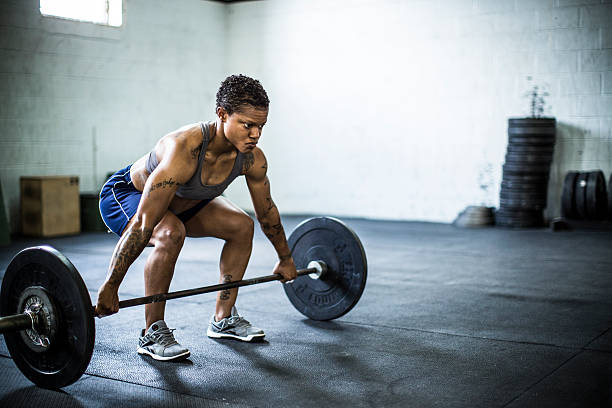
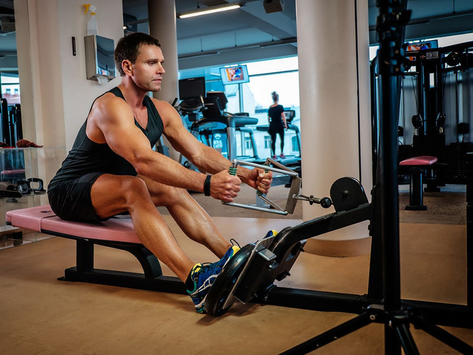
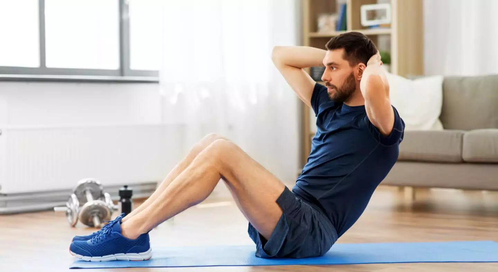

Supino

O supino é um exercício de musculação que trabalha principalmente os músculos do peito (peitorais), mas também envolve os ombros (deltoides) e tríceps. Ele é realizado deitado em um banco plano, segurando uma barra com pesos acima do peito e empurrando-a para cima até os braços estarem estendidos, e então abaixando-a de volta à posição inicial. O supino é um dos exercícios mais populares para desenvolver força e tamanho no peito.
Agachamento
O agachamento é um exercício fundamental para fortalecer os músculos das pernas, incluindo quadríceps, isquiotibiais e glúteos, além de fortalecer os músculos do core. Ele é realizado mantendo os pés afastados na largura dos ombros e baixando o corpo até que os quadris fiquem abaixo do nível dos joelhos, mantendo os joelhos alinhados com os pés e a parte inferior das costas em uma posição neutra. O agachamento é essencial para desenvolver força, estabilidade e mobilidade nas pernas e na região do core.
Levantamento Terra
O Levantamento Terra, um dos exercícios fundamentais do treinamento de força, é uma técnica que envolve levantar uma barra do chão até a posição ereta, com as costas retas e os quadris estendidos.
Remada
A remada é um exercício que fortalece as costas, ombros e braços. Com uma barra, mantenha os pés afastados na largura dos ombros, segure a barra com as mãos pronadas e puxe-a em direção ao abdômen, mantendo os cotovelos próximos ao corpo. Baixe a barra de volta à posição inicial controladamente. É eficaz para o desenvolvimento muscular das costas, mas é importante manter uma boa forma para evitar lesões
Abdominais
Os abdominais são exercícios que visam fortalecer os músculos abdominais. Deitado de costas, com os joelhos dobrados e os pés apoiados no chão, contraia os músculos abdominais e levante os ombros em direção aos joelhos. Mantenha o queixo afastado do peito e evite puxar a cabeça com as mãos. Retorna à posição inicial de forma controlada. Esses exercícios são eficazes para fortalecer o core e melhorar a estabilidade do tronco.
prancha
A prancha é um exercício de fortalecimento do core e estabilização do corpo. Comece deitado de bruços, em seguida, levante o corpo, apoiando-se nos antebraços e nas pontas dos pés. Mantenha o corpo reto, alinhando os ombros, quadris e tornozelos. Segure essa posição pelo tempo desejado, mantendo os músculos abdominais e das costas contraídos. A prancha é eficaz para fortalecer o core e melhorar a postura.